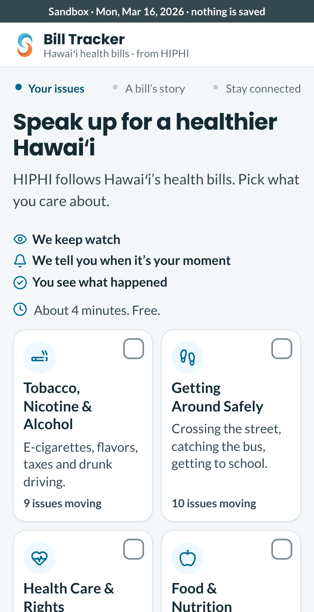
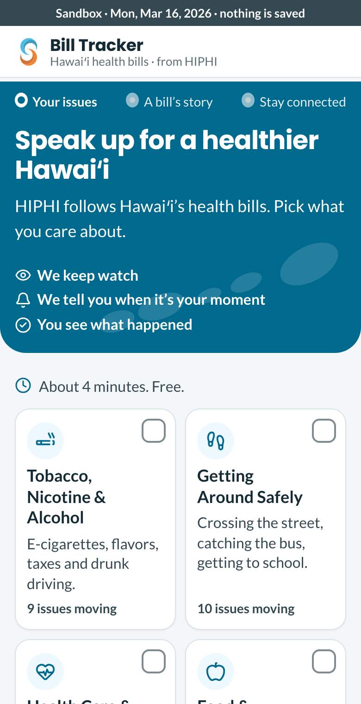
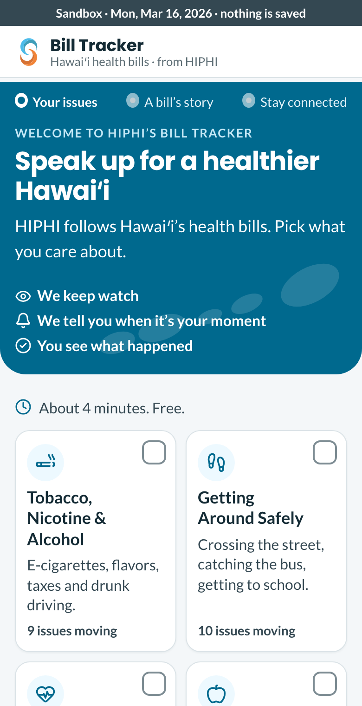
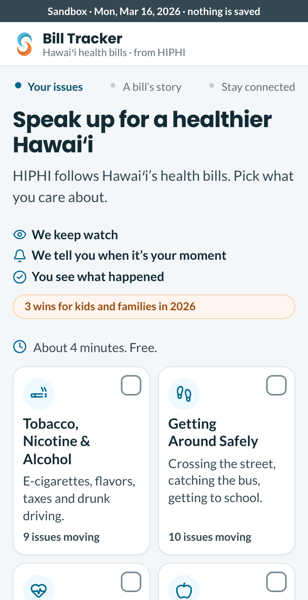

Four looks for the first screen
Today a first-time visitor lands on a calm white page. These show what it could look like if HIPHI’s own look carried the top, so a stranger sees at once whose it is. Each picture is today’s real first screen with the change laid over it. Nothing in the tracker has changed.
HIPHI’s website uses the same blue (#00698E) as the tracker’s buttons, with white type and an orange for celebration, so the blue band here is the website’s own blue. The island shapes are placeholders: HIPHI’s own island art would replace them.
Calm and white

Nothing changes. It is clear and quick, and it looks like any app until someone reads the small “from HIPHI” under the logo.
Cost: none.
HIPHI’s blue behind the heading

The top of the screen becomes a blue band with white type and soft island shapes, rounded at the bottom. The topic cards below are unchanged. It adds about 20 pixels of height here, so the cards start slightly lower; the final version would fold that into the band.
Cost: about a day, with the final island art.
The blue band, with a first line that names it

The same band, with a small line above the heading: “Welcome to HIPHI’s Bill Tracker”. It says who made this in words as well as colour.
Cost: the same, plus the line’s wording.
Today’s page, with one orange line of good news

No band. Above the topics, a small orange pill with a real win from the 2026 session (the wording here is an example; the real one would come from the bills that became law). Orange is kept for achievement only (DESIGN A-5), and this is one.
Cost: a few hours.
How we would know a look worked
- The five outside testers’ five-second answer to “who made this, and would you trust it?”: do more of them say HIPHI, a health group, or a trusted name?
- After January: how many people leave on the first screen (the first-visit counts already show it).
This is a design guess until real people use it. The new “try both versions” stops on 15 October, so a look you pick would replace today’s screen for everyone, not be tested against it. The finale (the last screen) would get the same band.
To choose: reply with a letter (A to D), or say which parts to mix. Nothing is built until you do.